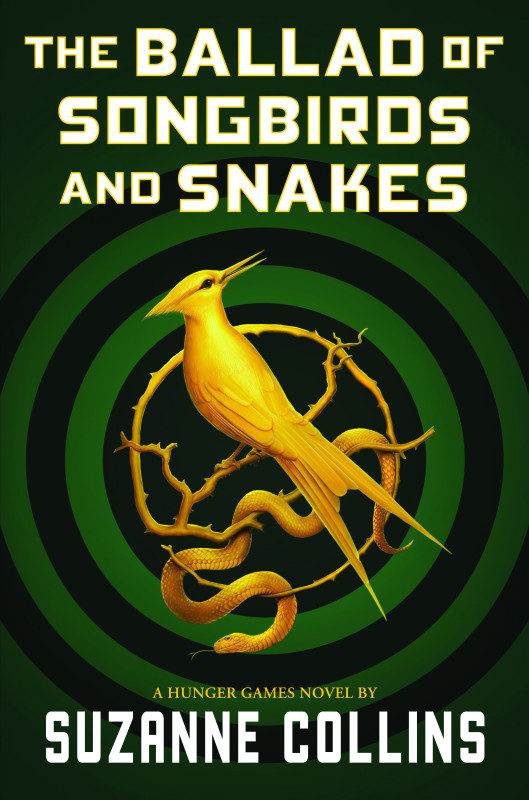

Suzanne Collins

Welcome
Hi! Thanks for visiting my website. Here’s a picture of me with a rat in Central Park. If you’ve read my fantasy series, The Underland Chronicles, you will have a clue as to why I chose this photo. If not, you may want to click around and find out a little more about my books. Or visit the Scholastic website for cool games and info!
Click here to check out Scholastic's Underland Chronicles website!
The Hunger Games: The Ballad of Songbirds and Snakes
In Theatres Now!

#1 USA TODAY BESTSELLER
#1 NEW YORK TIMES BESTSELLER
#1 WALL STREET JOURNAL BESTSELLER
#1 PUBLISHERS WEEKLY BESTSELLER
A BARNES & NOBLE BEST YA SCIENCE FICTION AND FANTASY BOOK OF 2020
AN AMAZON BEST SCIENCE FICTION AND FANTASY BOOK OF 2020
A NEW YORK TIMES EDITORS' CHOICE
2020 GOODREADS CHOICE AWARD FINAL ROUND--YA FANTASY
WATERSTONES BEST BOOKS OF 2020: SCIENCE FICTION & FANTASY
COSMOPOLITAN'S 20 BEST YA BOOKS OF 2020
TODAY'S BEST YA BOOKS OF 2020
2021 KIDS' BOOK CHOICE AWARDS FINALIST BEST FANTASY WORLD BUILDER SUZANNE COLLINS/THE BALLAD OF SONGBIRDS AND SNAKES A HUNGER GAMES NOVEL
"'The Ballad of Songbirds and Snakes' delivers a mesmerizing look into the life of Coriolanus
Snow
and the root causes of his villainous behavior. Collins once again proves that she is a master
of
building a fascinating world around complex characters who must grapple with the complications
of
chaos and control and their effects on human nature."
--The Associated Press
"It's the pull between Coryo's head and heart — and the realization that he actually has a
beating
heart, not just a rose-scented lump of coal — that makes the future President Snow very worthy
of a
517-page prequel."
--The Washington Post
"Both a tense, character-driven piece and a cautionary tale...The twists and heartbreaks
captivate
despite tragic inevitabilities."
--Kirkus Reviews, STARRED REVIEW
"If you read The Hunger Games in one sitting, settle in for the long haul once more—because The
Ballad of Songbirds and Snakes is nearly impossible to put down...The Ballad of Songbirds and
Snakes
is incredibly exciting, thought-provoking, and relevant."
--Amazon Book Review
"A sleek Hunger Games prequel...The plot of the novel rests on deception and pretence, its view
of
humanity bleak; yet Collins's themes of friendship, betrayal, authority and oppression, as well
as
the extra layers of lore about mockingjays and Capitol's history, will please and thrill."
--The Guardian
"A gripping mix of whipsaw plot twists and propulsive writing make this story's complex
issues—vulnerability and abuse, personal responsibility, and institutionalized power
dynamics—vivid
and personal."
--Publishers Weekly
"Fans will appreciate revisiting the world of Panem, and teens may relate to Coriolanus
beginning to
grapple with big ideas like human nature and whether people on opposite sides of a war are
fundamentally different."
--School Library Journal
"A Hunger Games without Everdeen might have seemed as peculiar as a Potter without Harry, but it
works beautifully, largely thanks to a new character. The clever, charismatic precursor, Lucy
Baird
Gray, a Covey (a sort of gypsy) who is chosen to represent District 12 in the tenth Games. She
is a
folk singer of prophetic ballads and has a thing about snakes. She is gorgeous, of course, in
her
late mother's old rainbow dress (the casting for the film, confirmed by Lionsgate, will be
fun)."
--The Times
"By introducing a new cast of teenagers, Collins is able to raise questions about privilege, the
uses of violence, and the futility of war."
--People
"It is a steep challenge to write a book whose hero is, everyone knows, destined to become
deeply
evil. Do we want to hear — now, after we know the endgame — that the young Voldemort was
unfairly
saddled with a demerit in class or that the adolescent Sauron fretted because he had to wear
hand-me-down clothes? Yes, please."
--The New York Times, Sarah Lyall
"..."The Ballad of Songbirds and Snakes'" clever exploration of the world and how its perverse
forms
of entertainment and control came to be are bound to satisfy fans. It may not be a particularly
comforting form of escapism, but Collins' uneasy, thought-provoking prequel is absorbing all the
same."
--Insider
"The Ballad of Songbirds and Snakes describes how most lives are actually lived, the
consequences of
countless small choices that ultimately amount to a big one: not just how to feel but who to
be."
--Slate Magazine
"The Ballad of Songbirds and Snakes is a darkly satisfying origin story...It's a reminder of the
power of propaganda — how putting the veneer of a good narrative atop any awful thing can get
people
to believe the message."
--Polygon
"The Ballad of Songbirds and Snakes...confirms Collins as a master of dystopian YA, able to spin
engaging tales around deeply flawed characters and societies."
--New York Journal of Books
"The Ballad of Songbirds and Snakes builds on the original series' overt critique of violence
and
those who perpetuate it, again in terms that speak to a more mature audience than their
young-adult
marketing might suggest. For true fans of The Hunger Games, Collins shines most as she weaves in
tantalizing details that lend depth to the gruesome world she created in the original series and
Coriolanus's place in its history."
--Time Magazine
Selected Works
PICTURE BOOK
YEAR OF THE JUNGLE"Important and necessary."
--Kirkus Reviews, STARRED REVIEW
WHEN CHARLIE MCBBUTTON LOST POWER
"A clever, humorous story in rhyme"
--School Library Journal
SCI-FI
MOCKINGJAY
"...every bit as original and thought provoking, as The Hunger Games. Wow."
--Los Angeles Times
CATCHING FIRE
“...doesn’t disappoint when it segues into the pulse-pounding action readers have come to expect.” --Publishers Weekly, STARRED REVIEW
THE HUNGER GAMES
“...a superb tale of physical adventure, political suspense, and romance."
--Booklist, STARRED REVIEW
FANTASY
GREGOR THE OVERLANDER
“...readers will likely find [the Underland] to be a fantastically engaging place.”
--Publishers Weekly, STARRED REVIEW
GREGOR AND THE PROPHECY OF BANE
“Yessss!”
--Kirkus Reviews
GREGOR AND THE CURSE OF THE WARMBLOODS
“...immensely readable installment..."
--The Horn Book Magazine
GREGOR AND THE MARKS OF SECRET
"...will leave readers gasping..."
--Kirkus Reviews, STARRED REVIEW
GREGOR AND THE CODE OF CLAW
"...excellent acquisition for any library."
-VOYA
QUICK LINKS
Scholastic
Penguin Group
NPR
Listening Library
Indie Bound
Barnes & Noble
Books-A-Million
Amazon
Authors Guild